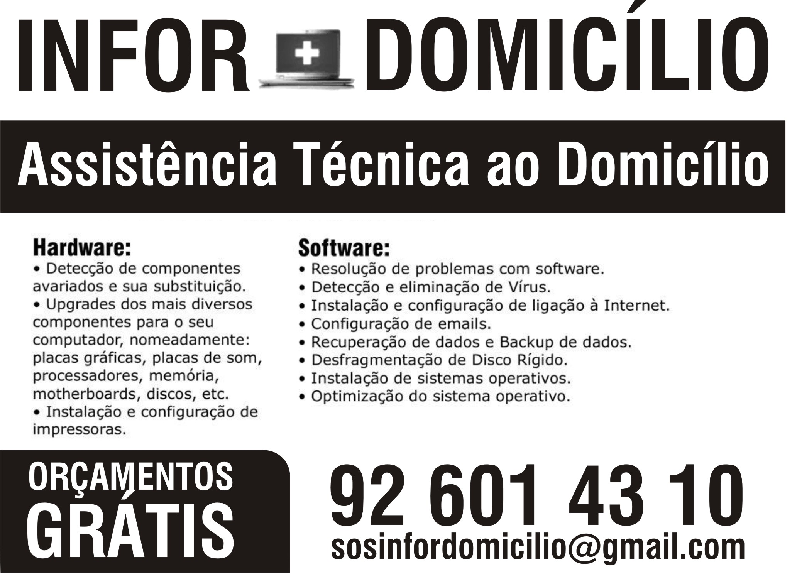

Equipamentos e sistemas
Diagnóstico, manutenção, reparação e upgrades de portáteis e desktops. Configuração de sistemas, aplicações e periféricos, com avaliação de compatibilidade e das necessidades do cliente.
Tecnologia com apoio próximo
Mais de 25 anos de experiência no apoio informático ao domicílio.

Contamos com mais de 25 anos de experiência no apoio informático a clientes ao domicílio. O nosso percurso orienta a forma como analisamos cada pedido: ouvir o problema, compreender a utilização e explicar as opções antes de intervir.
Diagnóstico, manutenção, reparação e upgrades de portáteis e desktops. Configuração de sistemas, aplicações e periféricos, com avaliação de compatibilidade e das necessidades do cliente.
Apoio a redes e Wi-Fi, migração de ficheiros e organização de cópias de segurança. Cada solução é avaliada em função dos equipamentos e da utilização.
Explicamos as opções e as condições da intervenção antes de avançar. O acesso aos dados e as sessões de apoio remoto são combinados com o cliente.
A Biochip - Infordomicilio presta assistência ao domicílio, mediante marcação, e apoio remoto quando adequado ao pedido. A atividade é exercida em nome individual por Ricardo Duarte, sem loja aberta ao público.
Pedir assistênciaUm registo dos nossos materiais de divulgação, parte do percurso de apoio informático aos clientes.
